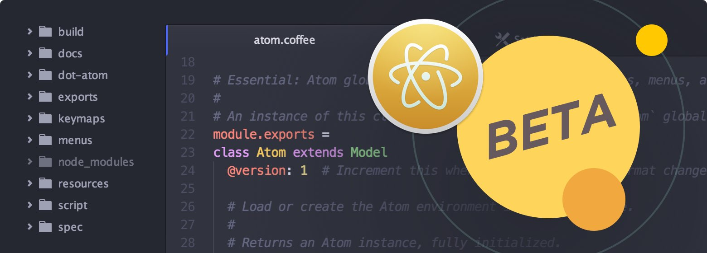

-
Atom 1.0 Contributor Patches
November 16, 2015
thedaniel
To celebrate our 1.0 release at the end of June this year, we produced a limited-edition patch for people that contributed to the editor leading up to this important milestone.
Read more -
Atom 1.2
November 12, 2015
benogle
-
MuleSoft's New API Workbench is built on Atom
November 3, 2015
yourfrienderin
A big part of the mission behind Atom is to create a shared community foundation on which people can build amazing developer tools. We’d like to occasionally showcase new and interesting things built on top of Atom.
Read more -
Atom 1.1 is out
October 29, 2015
Today we are excited to announce Atom 1.1.0. It comes with many improvements and marks the first stable release to pass through the new Atom beta channel. Let’s dig in.
Read more -
Introducing the Atom Beta Channel
October 21, 2015
nathansobo

Read more -
Making your first Atom contribution
October 16, 2015
Atom is a large open source project—it is made up of over 200 repos, and there are over 3400 open issues across all repos. As with most large open source projects, knowing where to start contributing can be overwhelming.
Read more